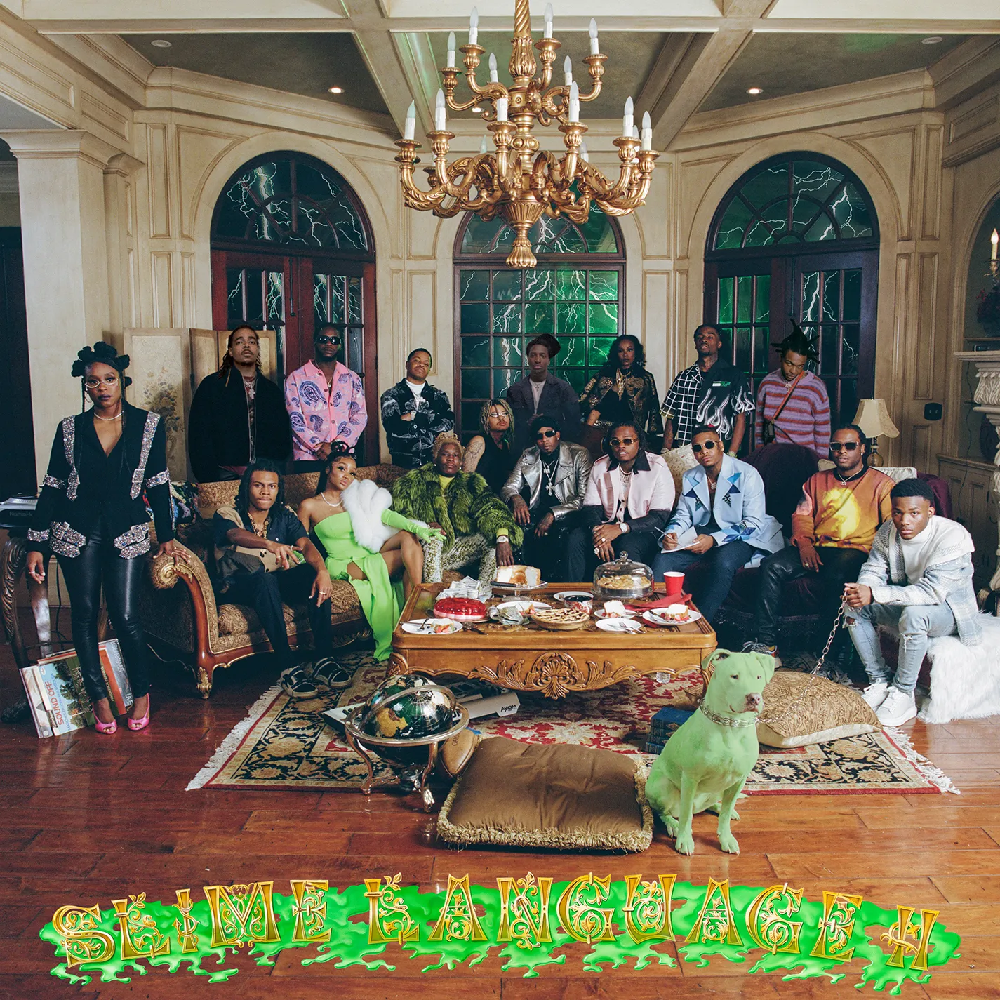

Kanye West: Graduation (2007)
Graduation es el tercer álbum de estudio de Kanye West,este marcó un punto de inflexión en el panorama del hip-hop. El disco fusiona a la perfección elementos del hip-hop tradicional con influencias del pop y el rock,
Enlace al Disco
Young Thug: Slime Language 2 (2021)

Slime Language 2 es un compendio de trap que consolida el dominio de Young Stoner Life (YSL), el colectivo liderado por Young Thug. El álbum es una verdadera oda al sonido característico de YSL, con beats pegadizos, flows versátiles y letras que hablan de la vida en la calle y el éxito.
Enlace al disco
Quevedo: Donde Quiero Estar (2023)
Donde quiero estar representa un viaje profundo al interior del universo de Quevedo. A través de sus letras, el artista español nos invita a acompañarlo en sus reflexiones sobre la fama, la soledad, el amor y la búsqueda de la identidad.
Enlace al disco